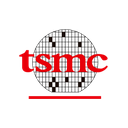

TSMNYSE (ADR) · Taiwan Semiconductor Manufacturing Co.
Fair value por ADR (blend propio)
$458.99
vs. $398.73 mercado · +15.1%
POSTURA DEL ANÁLISIS: NEUTRAL, CON SESGO CONSTRUCTIVO — LAS GANANCIAS CRECIERON MÁS RÁPIDO QUE EL PRECIO: EL ADR BAJÓ 7% DESDE SEPTIEMBRE MIENTRAS EL EPS TTM SUBIÓ 12%, Y EL BLEND QUEDA 15% POR ENCIMA DEL MERCADO — tres de los cuatro métodos están en línea o por encima del precio; el DCF que resta el capex completo (US$319.32) sigue por debajo, porque TSMC reinvierte un tercio de sus ingresos en fábricas (ver Sección 13)
Este documento es análisis independiente con fines informativos y educativos. El autor no es un asesor financiero registrado (no CFA / no matriculado ante la CNV/SEC) y este contenido no constituye una recomendación de compra, venta o mantenimiento para ningún lector en particular. Ver disclosure completo al pie.
Fundición de semiconductores pura ("pure-play foundry"): fabrica silicio diseñado por terceros (Apple, NVIDIA, AMD, Broadcom, Qualcomm, MediaTek) en nodos de proceso de vanguardia (2nm, 3nm, 5nm) y empaquetado avanzado (CoWoS)
TSMC reportó, el 15 de octubre de 2026, ingresos del tercer trimestre de US$46.72 mil millones (+41.2% interanual y
+16.2% secuencial en dólares, por encima de su guía de US$44.6–45.8 mil millones), con margen bruto de 66.4% y margen
operativo de 58.7%. El EPS fue de NT$29.43 (US$4.60 por ADR, +68.7%). Guio US$52.3–54.3 mil millones para el cuarto
trimestre y un crecimiento de ~44% en dólares para todo 2026. Octubre confirmó la tendencia: NT$586.89 mil millones,
+59.7% interanual. La junta aprobó un dividendo de NT$9.0 por acción, asignaciones de capital por ~US$40.9 mil
millones e inversiones de hasta US$500 millones en Anthropic y otros US$500 millones en OpenAI. El ADR cerró el 13 de
noviembre en US$398.73 (−7.0% desde septiembre) mientras el EPS por ADR de los últimos doce meses subió 12%: el
blend pasa de US$435.91 (septiembre con la regla de pesos vigente) a US$458.99.
Var. ingresos (últ. trim., US$)
+41.1%
01 — Resumen Ejecutivo
El cuello de botella del mundo factura 41% más — y el ADR cotiza más barato que en septiembre
El 15 de octubre de 2026, TSMC reportó ingresos del tercer trimestre de NT$1.494 billones (US$46.72 mil millones),
+50.9% interanual en moneda local y +41.2% en dólares. El margen bruto fue de 66.4% (59.5% un año antes) y el operativo
de 58.7%, ambos dentro o por encima de la guía. Los nodos avanzados (7nm o menos) fueron 79% de los ingresos de
obleas, con el 2nm ya en 8% en su primer trimestre de volumen, el 3nm en 33% y el 5nm en 28%. La utilidad neta subió
68.7% a NT$763 mil millones (EPS de NT$29.43, US$4.60 por ADR).
Para el cuarto trimestre, TSMC guio ingresos de US$52.3–54.3 mil millones (+14.1% secuencial en el punto medio), con
margen bruto de 65–67% y operativo de 56.5–58.5%, y elevó su expectativa para 2026 a un crecimiento de ~44% en dólares
(~US$176 mil millones). Los ingresos de octubre (NT$586.89 mil millones, +59.7% interanual) muestran que el cuarto
trimestre arrancó por encima de ese ritmo. El flujo operativo del trimestre fue de NT$919.8 mil millones (61.6% de los
ingresos) contra un capex de NT$443.2 mil millones (29.7%): flujo de caja libre de NT$476.6 mil millones, el triple que
un año antes.
A US$398.73 por ADR, TSMC vale ~US$2.07 billones y cotiza a 25.7x la utilidad de los últimos doce meses y 17.6x la de
consenso para 2027: más barata que en septiembre, cuando cotizaba a ~31x el TTM. El blend de la Sección 13 da
US$458.99, 15.1% por encima del precio: la reversión histórica (US$469.96) y el consenso (US$586.69)
quedan arriba, los comparables (US$399.74) en línea, y el DCF (US$319.32) abajo. La postura pasa de neutral a
neutral, con sesgo constructivo.
02 — Historia y Evolución
De un experimento de Morris Chang a la pieza más crítica de la cadena de la IA
TSMC fue fundada en 1987 en Hsinchu por Morris Chang, con apoyo del gobierno de Taiwán y de Philips, para probar un
modelo que no existía: fabricar chips diseñados por otros, sin competir con sus clientes. Ese modelo de fundición pura
permitió el nacimiento de la industria fabless (NVIDIA, Qualcomm, AMD tras escindir sus fábricas, Apple en sus
chips propios) y llevó a TSMC a superar a Intel y Samsung en tecnología de proceso a fines de la década de 2010. C.C.
Wei es presidente y CEO.
Los ingresos pasaron de US$35.8 mil millones en 2019 a US$122.4 mil millones en 2025, y la guía lleva 2026 a ~US$176
mil millones. La era de la IA cambió el escalón: los aceleradores de NVIDIA, AMD y Broadcom se fabrican casi todos en
TSMC, con el empaquetado avanzado CoWoS como cuello de botella de toda la industria.
Ingresos anuales en US$ mil millones, 2019–2025, más 2026 implícito por la guía (nueve meses reales + punto medio del 4Q) y 2027E de consenso. Fuente: 20-F, 6-K y stockanalysis.com.
03 — Modelo de Negocio y Segmentos
Una fundición de un solo segmento, dominada por HPC y por los nodos de vanguardia
TSMC reporta un único segmento. La lectura relevante está en la mezcla por plataforma (HPC —cómputo de alto
rendimiento, que incluye IA— ya es dos tercios de los ingresos) y por nodo. En el tercer trimestre de 2026, el 2nm
llegó a 8% de los ingresos de obleas en su primer trimestre de producción en volumen.
Ingresos por plataforma (% del total), dato del 2Q 2026 informado en la edición de septiembre; el desglose del 3Q 2026 se publica en la presentación de la compañía como gráfico. HPC incluye aceleradores de IA y CPU de servidor.
Ingresos de obleas por nodo, 3Q 2026 (% del total). Avanzados (7nm o menos): 79%. Fuente: comunicado del 15-oct-2026.
El modelo tiene dos características que pesan en la valuación. La primera: TSMC es el outlier de mayor
intensidad de capital del panel —invierte ~30-36% de sus ingresos en fábricas, contra 1-5% de los diseñadores fabless—,
así que su flujo de caja libre es la diferencia entre un flujo operativo de ~60% de los ingresos y ese capex. La
segunda: la producción fuera de Taiwán (Arizona, Japón, Alemania) diluye el margen, algo que la propia compañía
cuantifica en sus presentaciones.
04 — Desarrollos Recientes y Perspectiva
Guía de +44% para 2026, octubre a +60% y US$41 mil millones de capital aprobado
El reporte del 15-oct-2026
Ingresos de US$46.72 mil millones contra una guía de US$44.6–45.8 mil millones; margen bruto de 66.4% (guía 65–67%) y
operativo de 58.7% (guía 56–58%). El margen bruto bajó 1.3 puntos frente al segundo trimestre por la rampa del 2nm y
la producción en el exterior, pero sigue 6.9 puntos arriba de un año antes. El ADR bajó 2.3% al día siguiente.
La guía del 4Q 2026 y de 2026
Ingresos de US$52.3–54.3 mil millones en el cuarto trimestre, con margen bruto de 65–67% y operativo de 56.5–58.5%, al
tipo de cambio de NT$31.8. Para todo 2026, ~44% de crecimiento en dólares. Los ingresos de octubre, NT$586.89 mil
millones (~US$17.8 mil millones), crecieron 14.7% sobre septiembre y 59.7% interanual.
Capital: ~US$40.9 mil millones aprobados y dos inversiones en IA
La junta aprobó asignaciones de capital por ~US$40.9 mil millones (capacidad avanzada, empaquetado, construcción de
fábricas y capex de I+D de 2027), un vehículo de inversión estratégica de hasta US$500 millones y la compra de acciones
de Anthropic en su oferta pública inicial por hasta US$500 millones y de acciones preferidas de OpenAI por hasta US$500
millones. Son montos chicos frente al balance, pero atan a TSMC a dos de los grandes compradores de cómputo.
Dividendo y un incidente de datos
El dividendo trimestral se mantuvo en NT$9.0 por acción. El 12 de noviembre de 2026 la compañía informó un acceso no
autorizado a datos personales de empleados; no reportó impacto operativo.
05 — Estados Financieros
Márgenes cerca de máximos históricos, con el 2nm y el exterior empezando a pesar
Margen bruto y operativo trimestral, 3Q 2025 a 3Q 2026, y punto medio de la guía del 4Q 2026. Fuente: presentaciones de TSMC.
Ingresos trimestrales en US$ mil millones, 2Q 2025 a 3Q 2026, y punto medio de la guía del 4Q 2026.
06 — Deuda y Balance
Caja neta de ~US$97 mil millones
07 — Flujo de Caja y Capital Allocation
El flujo de caja libre se triplicó en un año
El margen de flujo operativo de los últimos doce meses es de ~62.7% y el capex de ~32.7%: deja un flujo de caja libre
de ~30% de los ingresos, contra ~24% en septiembre. La guía de capex de 2026 era de US$60–64 mil millones; la junta ya
aprobó capital para 2027. El dividendo es la única forma de retorno al accionista; el resto del flujo engrosa la caja.
Capex como % de los ingresos: TSMC frente a los diseñadores fabless (orden de magnitud).
08 — Comparables de Industria
Sin un comparable limpio: entre las fundiciones maduras y los habilitadores de IA
P/E sobre el EPS de consenso 2027E.
TSMC cotiza a 17.6x su EPS de 2027, exactamente el promedio del panel: por encima de NVIDIA (10.3x, cuyo múltiplo se
comprimió fuerte) y de GlobalFoundries, y por debajo de ASML. Sobre la utilidad de 2026 cotiza a 23.8x.
09 — Gobierno Corporativo y Estructura Accionaria
El Estado taiwanés como mayor accionista y un directorio de mayoría independiente
El National Development Fund del gobierno de Taiwán es el mayor accionista individual (~6%); el resto está repartido
entre inversores institucionales locales y extranjeros (los ADR representan ~20% del capital). C.C. Wei es presidente
y CEO desde 2024. La compañía reporta bajo normas contables de Taiwán (TIFRS) y presenta 6-K y 20-F ante la SEC. No
hubo cambios de gobierno relevantes desde la edición de septiembre.
10 — Registro de Riesgos
Qué podría cambiar esta lectura
11 — Catalizadores
Agenda de eventos relevantes
12 — Modelo Financiero Proyectado y Momentum de Estimados
El consenso proyecta otro año de +38% en 2027
Ingresos 2026 en US$ mil millones: consenso a inicios de 2026, tras el 1Q, tras el 2Q (sep-2026) y la guía actual (~+44%).
13 — Valuación: Cuatro Métodos y el Fair Value
Cuánto vale el ADR, con tres de cuatro métodos en línea o por encima del precio
Cuatro enfoques —DCF, comparables, reversión histórica y consenso— con los pesos fijos del desk (DCF 15%, comparables
25%, reversión 35%, consenso 25%). Sin suma de partes: TSMC es un solo segmento y la IA ya está en sus ingresos. Todos
los números salen de un script (.claude/skills/informe-bigtech/modelos/tsm/valuacion.py).
Qué cambió respecto de septiembre. Septiembre publicó un promedio simple de US$420.19; con los pesos
vigentes daba US$435.91. Esta edición da US$458.99 (+5.3%) con el ADR 7.0% más abajo. El DCF de
septiembre no se reproduce al centavo: con interpolación lineal el Base da US$273.15 (+3.8%) y con decaimiento
geométrico del crecimiento US$264.94 (+0.7%); la trayectoria año a año no estaba documentada. Esta edición usa la
geométrica.
Método 1 — Flujo de caja descontado (DCF), tres escenarios
Año 1 = 2027: ingresos de ~US$242.7 mil millones (2026 de ~US$176.1 mil millones —nueve meses reales más el punto
medio del cuarto trimestre— por el crecimiento de consenso de 37.8%). Por la regla de sobreponderar la demanda futura,
el ancla es la demanda que se ve hacia adelante (guía, octubre +60%, capital aprobado), no el TTM. El margen de OCF del
año 1 (62% en el Base) se ancla en el real TTM (~62.7%); el capex del año 1 (34%, ~US$82.5 mil millones) en una guía
que la compañía todavía no publicó para 2027 pero que el capital aprobado anticipa en suba. El WACC sube 0.4 puntos por
el Treasury a 10 años (4.78% → 5.15%): 10.9% en el Base. Caja neta: ~US$97.1 mil millones. ADR: 5,186 millones.
El caso Base (US$319.32) queda 19.9% por debajo del precio (en septiembre, −38.7%). El promedio simple
de los escenarios es US$354.09 y el ponderado (25/45/30), US$359.16. Chequeo de sesgo: ingresos de consenso, margen
de OCF anclado en el real, capex anclado en el nivel de 2026 — el resultado viene de descontar un FCF que es la
diferencia entre dos números grandes. El 75.1% del EV del Base viene del valor terminal.
Sensibilidad del caso Base: WACC × crecimiento terminal
Método 2 — Múltiplos de comparables (P/E 2027E)
El promedio del panel (NVDA 10.3x, GFS 16.0x, ASML 26.6x; 17.6x) aplicado al EPS por ADR de consenso 2027 (US$22.70)
da US$399.74, prácticamente el precio. El rango va de US$233.47 (múltiplo de NVIDIA) a US$603.66
(múltiplo de ASML). En septiembre, por EV/EBITDA a 18x, el método daba US$442.93.
Método 3 — Reversión a la media histórica propia (ventana limpia)
Aplicado al EPS/ADR TTM (US$15.54), el promedio de 30.2x da US$469.96, 17.9% por encima del precio. El
ADR cotiza a 25.7x ese EPS, por debajo de su media reciente: es el principal motivo del cambio de postura.
Método 4 — Consenso de Wall Street
Síntesis: los cuatro métodos, uno al lado del otro
"Football field" de valuación. La línea roja marca el precio del ADR (US$398.73); la azul, el blend ponderado (US$458.99). La barra de consenso se recorta en US$800 (techo real US$1,000).
El blend ponderado da US$458.99 por ADR, 15.1% por encima del precio (septiembre: −2.0%). Sin el
consenso, daría US$416.43 (+4.4%). El cambio viene de un precio que bajó mientras las ganancias subían: el ADR cotiza, al 13-nov-2026,
por debajo de su múltiplo medio de los últimos cuatro trimestres y en línea con el panel. La postura pasa a
neutral, con sesgo constructivo: el DCF, que carga el capex completo, sigue 20% por debajo del precio,
y el riesgo geopolítico no está en ningún número.
14 — Limitaciones del Modelo
Qué asume este análisis, y dónde puede fallar
El DCF depende de que el capex baje de 34% a 28% de los ingresos en cinco años; TSMC todavía no publicó su guía de
capex para 2027. El 75.1% del EV del Base viene del valor terminal. El DCF de septiembre no se reproduce al centavo
(Sección 13). Las conversiones de NT$ a US$ usan el tipo de cambio del 13-nov-2026 para saldos y consenso, y el
promedio del trimestre para resultados. El TTM en dólares (OCF, capex, EPS) es una estimación propia sobre la base
TTM de septiembre. El método de comparables cambió de EV/EBITDA a P/E 2027E. El desglose por plataforma del gráfico
es del 2Q 2026. Ningún método incorpora el riesgo geopolítico de Taiwán.
Documento elaborado a partir de fuentes públicas: SEC EDGAR (Forms 6-K y 20-F de Taiwan Semiconductor Manufacturing
Co., CIK 0001046179), comunicados, presentaciones e informes mensuales de ingresos de TSMC, S&P Global Market
Intelligence, stockanalysis.com, Yahoo Finance y prensa financiera especializada. Cifras con fecha de corte en el
trimestre cerrado el 30-sep-2026 (6-K del 15-oct-2026) y en los ingresos de octubre (6-K del 10-nov-2026); precio del
ADR, tipo de cambio, Treasury a 10 años y precios de comparables al cierre del 13-nov-2026; consenso al 15-nov-2026.
Sobre el autor y la naturaleza de este documento: este informe es un análisis independiente
elaborado por Manfredi Investment Research & Markets con fines exclusivamente informativos y educativos. El autor
no es un asesor de inversión registrado, no está matriculado ante la Comisión Nacional de Valores (CNV), la SEC, ni
ningún otro organismo regulador equivalente, y no mantiene una relación de asesoramiento financiero personalizado con
el lector. Ninguna cifra de este documento —incluido el "fair value" de portada, los escenarios de DCF, ni la
síntesis de la Sección 13— constituye una recomendación de compra, venta o mantenimiento para ningún lector en
particular, ni considera la situación financiera, los objetivos o el perfil de riesgo individual de quien lo lee. Los
escenarios de DCF son estimaciones propias sujetas a los supuestos declarados explícitamente en la Sección 13, y no
representan guidance oficial de ninguna de las compañías mencionadas salvo donde se cita de forma directa y
atribuida. Verificar cifras contra el 6-K/20-F más reciente de la compañía, y consultar a un asesor financiero
matriculado, antes de tomar cualquier decisión de inversión.